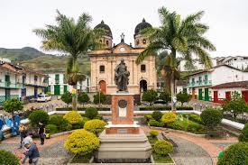
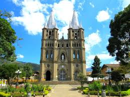
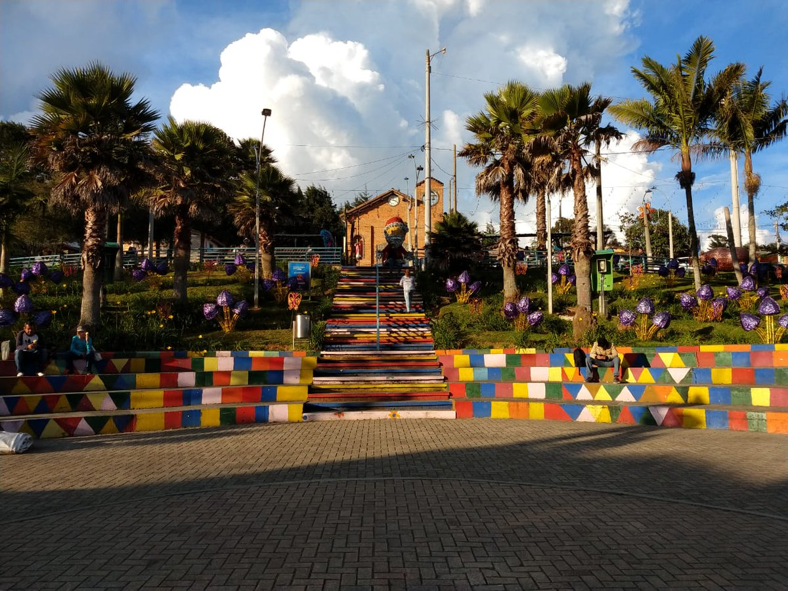

Nuestros viajes!
CONCEPCIÓN
Concepción es un municipio de Colombia, localizado en la subregión Oriente del departamento de Antioquia. Limita por el norte con los municipios de Barbosa y Santo Domingo, por el este con los municipios de Santo Domingo y Alejandría, por el Sur con los municipios de El Peñol y San Vicente Ferrer, y por el oeste con los municipios de San Vicente y Barbosa.
JARDÍN
Jardín es una localidad andina del noroeste de Colombia, conocida por sus casas de colores brillantes, las exhibiciones florales coloridas y los dulces de leche. La plaza principal, Parque El Libertador, tiene rosaledas, una fuente central y la Basílica de la Inmaculada Concepción, de estilo neogótico y con torres gemelas y vista desde su campanario.
SANTA ELENA
Santa Elena es sin duda el corregimiento de mayor visibilidad y reconocimiento cultural y turístico. Las razones para ello están relacionadas con su pasado lleno de tradición, la cultura silletera y su riqueza paisajística y de naturaleza. Está ubicado al oriente de la ciudad y es uno de los cinco corregimientos que conforman el área rural del Municipio de Medellín.